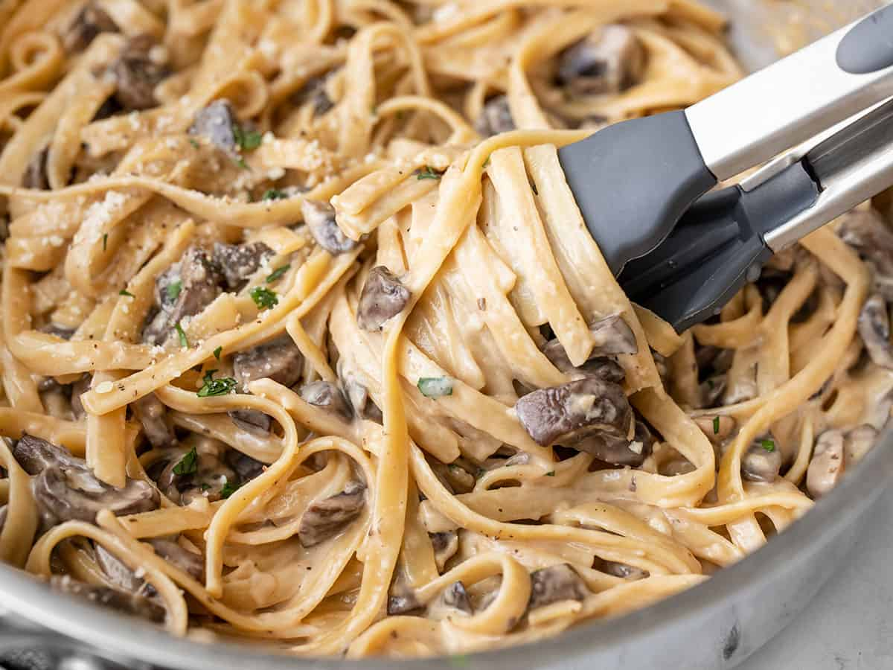

Creamy Chicken Fettuccine

Description
This One Pot Creamy Mushroom Pasta is a super-rich, umami-filled delight that is, as always, easily prepared in one pot. It’s the perfect comfort at the end of a long tiring work day. And don’t forget to make a little garlic bread to serve on the side.
Ingredients
- 4 cloves garlic
- 8 oz. baby bella mushrooms
- 2 tbsp butter
- 1/8 tsp salt
- 1/8 tsp freshly cracked pepper
- 8 oz. fettuccine
- 2.5 cups vegetable broth
- 1/3 cup heavy cream
- 1/4 cup grated parmesan
Steps
- Mince the garlic and slice the mushrooms.
- Add the butter and garlic to a deep skillet and sauté over medium heat for one minute. Add the sliced mushrooms, salt, and pepper, and continue to sauté until the mushrooms have softened, all of their moisture has evaporated from the skillet, and the edges are beginning to brown.
- Add the fettuccine to the skillet along with the vegetable broth and stir to combine. It's okay if the broth doesn't fully submerge the pasta.
- Place a lid on the skillet, turn the heat up to medium-high, and allow the broth to come up to a boil. When it reaches a boil, give the pasta a quick stir, replace the lid, then turn the heat down to medium-low.
- Continue to let the pasta simmer in the broth for about 10 minutes, stirring occasionally (always replacing the lid), or until the pasta is tender. There should be a little saucy liquid left in the bottom of the skillet.
- Add the heavy cream to the skillet and stir to combine. Turn the heat off then add the Parmesan and continue to stir the pasta until the Parmesan is melted. Give the pasta a taste and add salt or pepper if needed. Serve immediately.